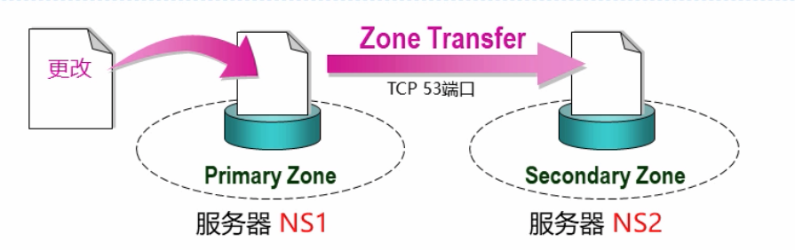
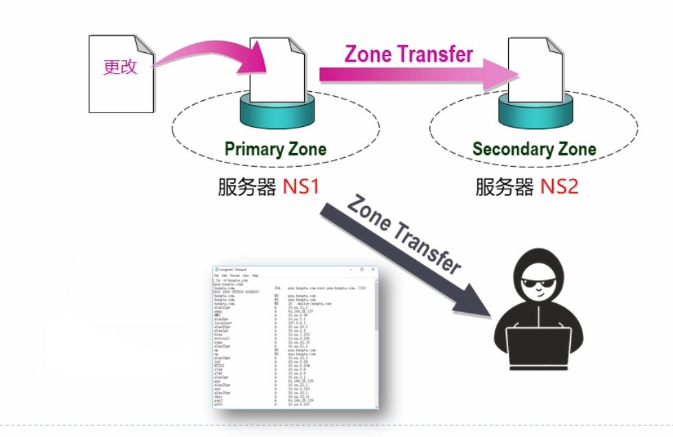

2. 区域间同步
区域传递与区域类型¶

| 区域 | 描述 |
|---|---|
| 主要Primary | DNS的一个读写副本 |
| 辅助Secondary | DNS的一个只读副本，需要指定复制的master |
| 存根Stub | 只包含用于定位名称服务器的记录的区域，需要指定复制的Master |
| 活动目录集成（ActiveDirectoryIntegrated） | 区域数据保存在活动目录而不是保存在区域文件中（微软独有） |
注意Bind并不支持最后一种活动目录集成的方式。
区域传递支持的是增量区域传递
区域传递的安全性¶

使用allow-transfer来实现安全加固，如果说缺少allow-transfer配置，那么就会允许所有主机的区域传递请求。
方案1：allow-transfer¶
指定地址匹配列表
allow-transfer { address_match_list };
如：全局配置
options {
...
// 默认拒绝所有
allow-transfer { none ; };
}
...
zone "example.com" IN {
....
// 为指定zone显示的指定
allow-transfer { localhost; 192.168.1.232; 172.16.1.0/24; };
}
进行测试，如
host -t AXFR kuaishou.com 1.1.1.1
方案2：TSIG¶
TSIG（TransactionSignature）使用签名的密钥进行验证，这样的方式安全性会高很多。
区域传递的时机¶
主DNS服务器的通知机制
- 当Zone数据文件有变化，主DNS服务器会默认通知辅助DNS服务器
- 默认是通知Zone中NS记录所指定的DNS服务器
- 辅助DNS服务器收到通知的时候，联系主DNS服务器，对比序列号并进行同步
我们可以使用rndc触发数据同步
rndc notify example.com
辅助DNS服务器：
- 根据SOA记录的Refresh参数，定期联系主服务器，对比序列号并进行数据同步
- 如果某次Refresh失败，根据SOA记录的Retry参数所设置的间隔进行尝试。
或者使用命令进行重新同步传输，如
rndc retransfer example.com